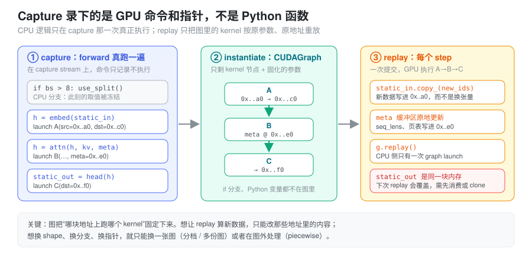
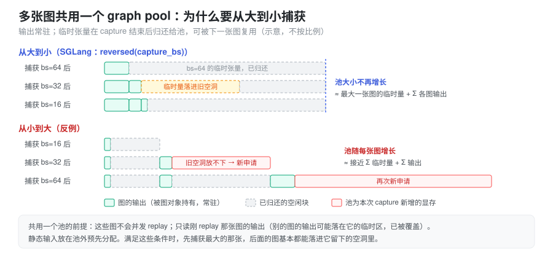

- decode 一步只算一个 token，GPU 利用率却上不去，profiler 里 kernel 之间全是空隙——慢的到底是谁？
- 开了 CUDA Graph
之后，
static_in = new_tensor为什么不生效？为什么上一步拿到的 logits 下一步“自己变了”？ - 启动时 “Capturing batches” 要跑很久、吃掉好几个 GB 显存，这些显存花在了哪里？
这些问题都指向同一个模型：CUDA Graph 录下的是一串
GPU 命令和它们引用的地址，之后只重放这串命令。
本篇先讲它要解决的问题和抽象，再讲由此产生的两条硬约束（静态地址、私有内存池），最后对照
SGLang decode 路径的实现。CUDA Graph 与
torch.compile、算子融合分别优化哪类成本，见 kernel
与编译执行。
问题：decode 为什么被 CPU 卡住
GPU kernel 是异步提交的：CPU 把命令写进 stream 队列后立刻返回，GPU 再按顺序消费（见 CUDA 异步执行）。单次提交的 CPU 侧成本（Python 解释、dispatcher、参数打包、驱动调用）通常在几微秒量级，而一次 kernel 的 GPU 执行时间可能只有一两微秒。
设第 i 个 kernel 的 CPU 提交时间是 t^{\text{cpu}}_i，GPU 执行时间是 t^{\text{gpu}}_i，一共有 N 个 kernel。在 CPU 能持续提前排队的理想情况下：
T_{\text{wall}} \approx \max\left(\sum_{i=1}^{N} t^{\text{cpu}}_i,\ \sum_{i=1}^{N} t^{\text{gpu}}_i\right)
当 \sum_i t^{\text{cpu}}_i > \sum_i t^{\text{gpu}}_i 时，GPU 会在两次 kernel 之间空转等待命令，流水线出现断档（bubble），这称为 launch-bound。decode 阶段每个 step 要跑几十层、每层若干个小 kernel，batch 又小，正是这种典型场景。
CUDA Graph 的做法是：把一整段固定的命令序列录制成一张 DAG，之后每次执行只需提交一次：
\Delta T \approx \sum_{i=1}^{N} t^{\text{cpu}}_i - t^{\text{cpu}}_{\text{graph}}
其中 t^{\text{cpu}}_{\text{graph}} 是单次 graph launch 的成本，与 N 基本无关。这就是它把 N 次提交压缩成 1 次的意义。
它不改变什么
CUDA Graph 只优化「CPU 提交命令」这一段：
- 不减少 GPU 的计算量，不减少 kernel 数量；
- 不做算子融合，图里本来就是那些 kernel；
- 不改变 stream/event 的同步语义；
- kernel 总时间远大于 CPU 提交时间时（大 GEMM、大 batch、prefill 的 compute-bound 区间），收益接近零。
抽象：录下的是 GPU 命令和指针，不是 Python 函数
最容易产生的误解是把 CUDA Graph 当成“把 forward
编译成一个 GPU
程序”。更准确的心智模型是录音机：capture 时
Python 照常执行一遍 forward，所有 Python
逻辑、dispatcher、shape 推导、if
分支都真实地跑了一次；但提交到 capture stream 上的 kernel
并不执行，只被记录下来——连同每个 kernel 的 grid/block
和参数里的设备指针。replay 时 Python
一行都不跑，GPU 直接按记录的参数、在记录的地址上执行这串
kernel。

由此可以直接推出后面所有的约束：
- 图里没有 CPU 逻辑。capture 时
if bs > 8走了哪条分支，这张图就永远是那条分支； - 图里的地址是固定的。想让 replay 算新数据，只能把新数据写进那些地址；
- 图里的 kernel 参数是固定的。shape 一变，grid 就变，只能换一张图。
三个阶段各自的语义：
| 阶段 | 做什么 | 关键点 |
|---|---|---|
| capture | 把 stream 上的命令记录成 DAG，不真正执行 | 期间禁止 CPU 侧阻塞同步和依赖 GPU 值的控制流 |
| instantiate | 校验拓扑、生成可执行的 cudaGraphExec_t |
一次性成本，不要放进热路径 |
| replay | 一次提交，GPU 按 DAG 执行 | 参数被固化，输入必须写回 capture 时的同一地址 |
用 CUDA Runtime 写出来就是三段：
cudaStreamBeginCapture(stream, cudaStreamCaptureModeGlobal);
launch_kernel_a<<<grid_a, block, 0, stream>>>(d_a, d_b); // 只记录，不执行
launch_kernel_b<<<grid_b, block, 0, stream>>>(d_b, d_c);
cudaStreamEndCapture(stream, &graph);
cudaGraphInstantiate(&graph_exec, graph, nullptr, nullptr, 0);
for (int step = 0; step < steps; ++step) {
update_static_inputs(); // 往 d_a 里写新数据
cudaGraphLaunch(graph_exec, stream); // 一次提交，内部 N 个 kernel
}PyTorch 把它包成 torch.cuda.CUDAGraph 与
torch.cuda.graph 上下文：进入上下文时调用
capture_begin()，退出时
capture_end() 一并完成 end capture 与
instantiate；不传 stream 时它会换到一条内部的
side stream 上捕获（capture 不能在 legacy 默认 stream
上进行）。
g = torch.cuda.CUDAGraph()
static_in = torch.empty_like(x)
# warmup：在 side stream 上先跑几次，让 cuBLAS 句柄、autotune、JIT、懒初始化都发生在图外
s = torch.cuda.Stream()
s.wait_stream(torch.cuda.current_stream())
with torch.cuda.stream(s):
for _ in range(3):
model(static_in)
torch.cuda.current_stream().wait_stream(s)
with torch.cuda.graph(g): # capture + instantiate
static_out = model(static_in) # static_out 的内存来自这张图的私有池
for step in range(steps):
static_in.copy_(next_input()) # 写回同一块 buffer
g.replay()
consume(static_out) # 下一次 replay 前用完warmup 不可省略：第一次调用里的一次性动作（库句柄创建、kernel autotune、编译缓存、懒分配）如果发生在 capture 中，要么直接报错，要么被录成一个只该执行一次却每次重放的动作。
capture 期间不能做什么
判据只有一条：这个动作需要 CPU 在此刻看到 GPU 的结果吗？ capture 期间 GPU 什么都没算，所以凡是要等 GPU 的动作都不成立：
- 显式同步：
torch.cuda.synchronize()、stream.synchronize()、event.synchronize()，capture 会直接报operation not permitted when stream is capturing一类错误； - 隐式同步：
.item()、.cpu()、.tolist()、打印张量值、非 pinned 的 D2H 拷贝（见 CUDA 异步执行 的“隐式同步”）； - 依赖 GPU 值的 CPU
控制流：
if mask.any():、torch.nonzero产生的动态 shape、按 GPU 结果决定的torch.empty(n)——即使侥幸没报错，取值也被冻结在 capture 那一刻； - 不受控的其他 stream：图内可以 fork
到别的 stream，但必须用
wait_stream/event 从 capture stream 分叉、再汇合回来，否则 capture 失败； - 其他线程的“不安全”调用：默认
capture_error_mode="global"时，capture 期间别的线程调用某些 CUDA API（如部分同步、分配接口）也会触发错误，这在多线程服务里是常见的偶发失败来源。
随机数是一个例外：PyTorch 对默认 CUDA generator 做了特殊处理，每次 replay 会推进 philox offset，所以图里的 dropout/采样不会每步重复同一组随机数；自定义 generator 需要额外注册。
约束一：静态地址——输入写进去，输出读出来就要用
图记录的是指针，所以“给图换输入”只有一种写法：原地写入 capture 时用的那块 buffer。
static_in.copy_(new_ids) # 正确：0x..a0 里的内容变了，图读到新数据
static_in = new_ids # 错误：只是 Python 名字换绑，图仍然读 0x..a0 的旧数据第二种写法不会报错，replay
结果只是“悄悄地”用了旧输入，这是 CUDA Graph 最典型的静默
bug。同理，所有在 capture 时被 kernel 读取的东西——attention
的
seq_lens、kv_indices/页表、out_cache_loc、采样参数——都必须是预分配的静态
tensor，每步原地更新内容。真实 batch 比档位小时，只写前
raw_bs 行，剩下的 padding 行填成“无害值”（例如
seq_len 填 1、写 KV 的位置指向一个 dummy slot），保证
padding 不越界、不污染真实请求。
输出方向有一个对称的陷阱：static_out
也是图私有池里的一块固定内存，下一次 replay
会原地覆盖它。
g.replay(); logits_a = static_out # 只是别名
g.replay(); logits_b = static_out # logits_a 也“变成”了第二步的结果如果输出要跨 step 保留（比如 overlap
调度里下一步才读上一步的 logits），需要先
clone() 或拷进自己的 buffer；或者保证在下次
replay 之前，所有读取输出的 kernel 已经在同一 stream 上排在
replay 之前。反过来，因为 replay 是异步的，CPU 侧在 replay
后立刻读输出也必须先等 stream。
约束二：Graph Pool——私有内存池与显存账
普通 eager 下，caching allocator 会把释放的块交给后续任意分配复用（见 显存管理与生命周期）。这对图是致命的：图里的 kernel 在 replay 时还会写 capture 时拿到的那些地址，如果这块内存在图外被别人复用，replay 就会踩坏别人的数据。
所以 torch.cuda.graph capture
期间的所有分配都走一个私有内存池（graph
pool）：
- 池里的块只给图用，eager 分配不会拿到它们；capture
结束后图对象持有这个池，直到图被销毁（
g.reset()或对象释放）才归还； - capture 中途释放的临时张量（层与层之间的中间激活）会在同一个池内被后续分配复用，图记录下来的就是复用后的地址——这是正确的，因为 replay 时 kernel 的顺序与 capture 时一致；
- 图的输出张量在 Python 侧仍被引用，所以一直占着池里的块。
多张图可以共享一个池：torch.cuda.graph(g2, pool=g1.pool())
或
pool=torch.cuda.graph_pool_handle()。共享的前提是：
- 这些图不会并发 replay（同一条 stream 上串行执行，或保证互斥）。否则 g1 的临时区和 g2 的临时区可能是同一块内存；
- 读输出时只读刚 replay 的那张图。别的图的输出块可能被这张图当作临时区复用，内容已被覆盖；
- 静态输入放在池外预分配（或所有图共用同一组静态输入），不依赖某张图的临时区。
在满足这些条件时，捕获顺序决定池有多大：

先捕获最大 batch 的图，它的临时量在池里留下一大片空闲块；后续小 batch 的临时量基本都能落进这些空洞，池的大小约等于“最大一张图的临时峰值 + 各图常驻输出之和”。反过来从小到大捕获，每张更大的图都放不下之前的空洞，只能向驱动新申请，池会接近“所有图临时量之和”。这正是 SGLang 倒序捕获的原因。
graph 显存的账因此可以这样记：
| 项 | 由什么决定 | 是否随档位数增长 |
|---|---|---|
| 静态输入 buffer | 最大档位 × 每 token 元数据 | 否，所有档位共用前缀切片 |
| 池内临时激活 | 最大档位的单步峰值 | 基本否（倒序捕获时） |
| 各图输出 | 每档位的 logits / hidden | 是，档位越多越大 |
| 图对象本身 | kernel 节点数 × 档位数 | 是（通常较小） |
这部分显存在启动时就被占住，并且在 KV cache 容量规划之外，所以档位开得越大、越密，留给 KV cache 的空间越少。
图能复用的条件
把“图只认地址和参数”换成可检查的条件，一段代码能被同一张图反复 replay，需要四个「一致」：
- kernel 数量一致；
- 执行顺序（DAG 拓扑）一致；
- grid / block 与标量参数一致；
- 所有 tensor 地址一致。
逐条对照 decode 阶段的 attention：
| 条件 | decode 的情况 | 结果 |
|---|---|---|
| kernel 数量 | 每个 step 固定 | 满足 |
| 执行顺序 | 固定 | 满足 |
| grid / block | q\_len 固定，batch padding 到固定档位 | 满足 |
| tensor 地址 | KV cache、Q buffer、metadata、workspace 全部预分配 | 满足 |
真正决定图能不能复用的，不是「shape
变不变」，而是「launch topology
变不变」。只要 block 数量、每个 block 处理多少
query、kernel 数量保持一致，kernel
内部循环次数变化是无所谓的——前提是这个循环次数是 kernel
从显存里读出来的（如
seq_lens[i]），而不是作为标量参数在 launch
时传进去的。后者会被固化在图里。
Attention 为什么通常不把 kv_len 放进 grid
以 FlashAttention / paged attention 为例，decode 阶段：
Q: [bs, 1, n_heads, head_dim]
K: [bs, kv_len, n_heads, head_dim]attention 的核心计算是
\mathrm{softmax}\!\left(\frac{QK^{\mathsf T}}{\sqrt{d}}\right)V
每个 query token 都要算一整行 attention。大多数实现的并行策略是
\text{grid.x} \approx \frac{bs \times n\_heads \times q\_len}{\text{queries per block}}
也就是「一个 thread block 负责一个 query block」。decode 时 q\_len = 1，所以 grid 规模只和 bs \times n\_heads 有关，与 kv_len 无关：
- q\_len 从 1 变成 8，grid 会扩大约 8 倍，launch 参数改变，图失效；
- kv\_len 从 1k 涨到 32k，grid 不变。
为什么 grid 不依赖 kv_len？因为 kv_len
可以到几千甚至几万，如果写成
grid.x = kv_len，grid
会直接爆炸。更常见的做法是每个 block 处理一个 query，在
block 内部循环 kv_len 并分 tile 读 K/V：
int kv_len = seq_lens[batch_idx]; // 从显存读，replay 时取到新值
for (int i = 0; i < kv_len; i += TILE) {
load K tile;
load V tile;
accumulate;
}这里 kv_len 是从静态 buffer 里读出的循环上界，不是 grid 维度，也不是 launch 参数。于是只要 KV cache 和 metadata buffer 的地址不变，grid 就固定，图就可以 replay。
需要强调的是：GPU kernel 的并行维度由「怎么分配工作」决定，不由数学维度决定。attention 在数学上是四维张量 (bs, q\_len, kv\_len, hidden)，工程上可以选择并行在 q 上、并行在 kv 上（split-KV / flash-decoding）或混合。split-KV 实现会让 grid 依赖“切几段”，图友好的做法是把切分数按最大长度或按档位固定下来。decode 实现不把 kv_len 放进 grid，是为了图友好与 occupancy 稳定，这是设计选择，不是理论必然。
Prefill 为什么难 graph
prefill 阶段：
Q: [num_tokens, hidden] # 一个 batch 里所有请求的 prompt token 拼在一起此时 q\_len 由用户 prompt 决定、天然可变，一个 batch 里各请求的长度分布也在变：
- token 总数变 \rightarrow GEMM 的 M 维和 attention 的 grid 变 \rightarrow launch 参数变 \rightarrow 图失效；
- 即使把总 token 数 pad 到档位，attention 还要知道每个请求的边界，这部分 metadata 的形状同样在变。
所以 prefill 的图复用问题出在 q\_len，不是 kv_len。实践中处理不定长输入有几条路线：
| 方案 | 做法 | 代价 |
|---|---|---|
| 不做 graph | prefill 走 eager，只对 decode 用图 | 放弃 prefill 的 launch 收益 |
| padding 到固定档位 | 把总 token 数 pad 到预先定义的 bucket | 浪费算力，短 prompt 被拉长 |
| 分段 graph | 只把与序列长度无关的子图 capture，attention 留在图外 | 图覆盖不完整，边界仍有 launch 开销 |
| shape 特化 | 对每个 bucket 各 capture 一张图 | 图数量随桶数增长，显存与管理成本上升 |
大 prefill 本身是 compute-bound（大 GEMM 占主导），CPU 提交时间占比低；但 chunked prefill 切出的小块、以及混合 batch 里的短 prompt 仍可能 launch-bound。这也是为什么较新的框架开始对 prefill 做“按 token 数分档 + 分段捕获”，而不是简单关掉（SGLang 的做法见后文）。
Batch size 分档
decode 能 graph 的前提是 grid 固定，但线上的 batch size 是动态的。解决办法是预先 capture 若干 batch size 档位（bucket），运行时把真实 batch pad 到不小于它的最小档位：
b_k = \min\left\{\, b_m \in \mathcal{B} \;\middle|\; b_m \ge b \,\right\}
其中 \mathcal{B} 是预先 capture 的档位集合，例如 1, 2, 4, 8, 16, \ldots。padding 带来的算力浪费比例为
\eta = 1 - \frac{b}{b_k}
档位越密，\eta 越小，但要维护的图越多，capture 时间与常驻显存也越高（见上文显存账）。常见策略是在小 batch 区间用密集档位（1、2、4、8），大 batch 区间用固定步长或几何增长；超过最大档位的 batch 直接走 eager。
一个容易被忽略的副作用是 MoE：pad 出来的 dummy token 如果参与路由统计，会污染 expert 的负载均衡。实现上通常要保证 dummy token 只占位、不参与统计与通信。
Piecewise CUDA Graph
整图 graph 化有一个硬前提：从入口到出口，中间不能有需要 CPU 参与决策的地方。真实推理图往往不满足：
- MoE 的动态路由结果可能需要在 host 侧做后续调度；
- attention backend 的选择、metadata 的构造依赖运行时状态；
- prefill 的请求边界、变长 shape 无法固定；
- 某些通信或自定义算子本身不可捕获。
piecewise CUDA Graph 的思路是把计算图切成若干段，每段单独 capture 成一张子图，段与段之间保留普通的 kernel launch 和 CPU 逻辑：
eager: [op A] [op B] [attention] [op C] [op D]
graph : [--- graph 1 ---] eager [--- graph 2 ---]
^ CPU 在这里做决策、选 backend、改 block table- 收益来自段内的批量提交，段数越少、段越长，收益越大；
- 段边界仍然是普通 launch，存在开销，段太碎会抵消收益；
- 每张子图仍然要求段内 launch topology 固定，所以通常还要叠加按 token 数分档；
- 段与段之间传递的激活也必须落在静态地址上，所以各段同样共享一个 graph pool。
vLLM V1 的 CUDAGraphMode 提供了
NONE / PIECEWISE /
FULL 等模式，其中 piecewise 模式就是按
attention 这类动态算子把图切开。PyTorch 侧
torch.compile(mode="reduce-overhead") 会在
Inductor 生成的代码外自动套 CUDA Graph（CUDA Graph
Trees）并管理静态输入，它在 graph break
处天然就是分段的。
在 SGLang 中：decode 的捕获与重放
以下基于本地 SGLang 代码
python/sglang/srt/。decode
默认使用整图后端，每个档位一张
torch.cuda.CUDAGraph；它把前面的概念一一落地。
一个 runner，可插拔的后端。
model_executor/runner/decode_cuda_graph_runner.py
的 DecodeCudaGraphRunner 负责档位、静态 buffer
与 metadata，具体怎么捕获交给
model_executor/runner_backend/
下的后端：resolve_decode_backend() 按
cuda_graph_config.decode.backend 选择，默认
full 即
FullCudaGraphBackend，breakable（分段捕获）为实验选项，tc_piecewise
对 decode 尚未实现、会回退到 full。prefill 由
PrefillCudaGraphRunner 处理，按聚合 token
数分档，CUDA 上默认用 breakable，其他平台默认
tc_piecewise——即上一节的分段思路。
档位与倒序捕获。
base_cuda_graph_runner.py 的
get_batch_sizes_to_capture() 从
cuda_graph_config.decode.bs
取档位，过滤掉超过请求池容量的值并排序，得到
capture_bs（以及可选的
torch.compile 档位 compile_bs，见
kernel
与编译执行）。capture() 先
warmup()，再在
_capture_one_stream() 里按
reversed(self.capture_bs)
从大到小逐档捕获——源码注释写的就是 “Reverse so cuda graphs
share memory better”，也就是上一节 graph pool
那张图的结论。
全进程共享一个池。
FullCudaGraphBackend.capture_session() 调用
runner_utils/pool.py 的
get_or_create_global_graph_memory_pool()：第一次调用时用
graph_pool_handle() 创建池，存进进程级的
get_resources().graph_memory_pool，之后
decode、prefill
以及其他后端都拿同一个句柄。这成立的前提正是“不会并发
replay”：同一时刻一个 worker 只跑一个 forward。
每档一次 capture。
capture_one_shape() 先用
capture_prepare() 构造一个指向静态 buffer 的
dummy ForwardBatch，然后交给
FullCudaGraphBackend.capture_one()：
- 先 warmup 两次，每次前做
synchronize()与 TPbarrier()，让一次性初始化和 autotune 发生在图外； - 再
torch.cuda.CUDAGraph()+device_module.graph(cuda_graph=graph, pool=self._pool, stream=self._capture_stream)捕获一次 forward； - 把图与输出对象分别存进
_graphs[shape_key]、_outputs[shape_key]；replay()只做graph.replay()并返回那份输出。
capture stream 来自
distributed/parallel_state.py 的
graph_capture() 上下文，它同时让 TP/PP/EP
各通信组切换到可捕获的模式；整个过程包在
freeze_gc() 里，减少 capture 期间 Python GC
的干扰。
attention metadata
被拆成“图外”与“图内”两半。 这是 attention backend
适配 CUDA Graph 的核心契约，定义在
layers/attention/base_attn_backend.py 的
AttentionBackend：
init_forward_metadata_out_graph(fb, in_capture=False)：在图外执行，capture 前与每次 replay 前都调用。需要 host 计算、动态 shape、.item()之类不可捕获的工作放这里，产物写进静态 metadata buffer；init_forward_metadata_in_graph(fb)：在run_once()内执行，会被录进图，每次 replay 自动重放；约束是不得调用.item()/.cpu()/.tolist()或动态 shape 的torch.empty()。
旧版的
init_forward_metadata_capture_cuda_graph /
init_forward_metadata_replay_cuda_graph
已从基类移除，旧笔记或外部 backend
里看到这两个名字时要按新契约理解。
replay：pad、原地写、重放、切片。
execute() → load_batch()：用
_pad_to_bucket(raw_bs, self.capture_bs)
选档位，buffer_registry.fill_from(...) 把真实
batch 的
input_ids、positions、seq_lens
等写进静态 buffer 的前 raw_bs
行（快速路径里就是
self.buffers.input_ids[: self.raw_num_token].copy_(forward_batch.input_ids)），再对
padding 后的 batch 视图调用
init_forward_metadata_out_graph()，最后
self.backend.replay(...)。返回的
next_token_logits 等是
output.next_token_logits[: self.raw_num_token]——一个静态输出
buffer 的切片 view。它在下一次 replay
时会被覆盖，所以下游采样必须在此之前消费完，这就是“约束一”在真实代码里的样子。
几个可直接用来排查的开关（server_args.py）：--cuda-graph-max-bs-decode
/ --cuda-graph-bs-decode 控制 decode 档位（旧的
--cuda-graph-max-bs、--cuda-graph-bs
仍作为已弃用别名保留）；--cuda-graph-backend-decode
/ --cuda-graph-backend-prefill 选择后端，取
disabled 即关闭对应阶段的图（旧的
--disable-cuda-graph
已弃用）；--debug-cuda-graph 需配合
breakable
后端使用，便于在分段边界定位问题。启动日志里 capture
结束时会打印 mem usage=... GB，就是上文“graph
显存账”的实测值。
与其它机制的关系
| 机制 | 交互点 |
|---|---|
| stream / event | capture 支持多 stream 的 fork/join，图内部会保留这些依赖边；replay 发生在调用时的当前 stream 上 |
| CPU-GPU 同步 | capture 期间禁止 CPU 阻塞同步；replay 本身是异步的，读输出前仍需按 stream 顺序或显式等待 |
| 通信库 | NCCL 的 collective 可以被捕获；CustomAllreduce 这类基于 IPC 共享内存的实现需要在 capture 时登记 buffer 地址，或切换到可捕获的路径 |
| 显存管理 | graph pool 是 caching allocator
里的一个私有池；它的显存不受 empty_cache()
影响，直到图被销毁 |
| 计算图 / 编译器 | CUDA Graph 是执行层的「静态化」，与编译器做算子融合是两个正交维度，见 kernel 与编译执行 |
常见坑
- warmup 不足：第一次调用中的库初始化、autotune、JIT 编译发生在 capture 中，导致 capture 失败或 replay 行为异常。
- 换绑而不是写入：
static_in = new_tensor不报错，图读的仍是旧地址。所有被 kernel 读的输入和 metadata 都要copy_/fill_进静态 buffer。 - 输出被覆盖：持有
static_out（或它的切片 view）跨过下一次 replay，读到的是新一步的结果。需要保留就clone()。 - 标量参数被固化：kernel 的 launch
参数里如果直接传了
max_seq_len、num_splits这类 Python int，图会永远用 capture 时的值；应改为从显存读取，或把它纳入档位。 - 图内出现同步：
synchronize()、.item()、依赖 GPU 值的分支，capture 会直接失败或录出错误结果。 - 共享池的图被并发 replay：多 stream / 多线程同时 replay 共享一个池的图，会互相踩临时区。
- 档位与图数量爆炸：batch 档位乘以 LoRA / 变体数再乘以分段数，图的数量和常驻显存会迅速失控。
- 参数更新：权重指针变化（重新加载权重、LoRA 切换）后旧图读的仍是旧地址，需要原地更新权重内容，或重新 capture。
- 报错难定位：graph 内部 kernel
的错误堆栈不友好，调试时先关掉图跑 eager 复现；SGLang
里也可改用
breakable后端缩小范围。
小结
CUDA Graph 的价值在于把 decode 这类 launch-bound 场景里的
N 次 CPU
提交压缩成一次，它不改变 GPU
计算量。理解它只需要一个模型：capture 录下的是
kernel、参数和地址，replay 只重放它们，CPU
逻辑不再参与。
由此推出全部约束——输入必须原地写进静态
buffer，输出会被下一次 replay 覆盖，shape
变化只能靠分档或分段，capture 期间不能等 GPU；为了让地址在
replay 之间保持有效，分配必须走私有 graph
pool，而多张图共享一个池时，从大到小捕获能把显存压到“最大一张图的峰值”。SGLang
decode 把这些落成了 capture_bs
倒序捕获、全进程共享的
graph_memory_pool、copy_ 写入静态
buffer，以及 attention backend 的 out_graph /
in_graph 两段式 metadata。